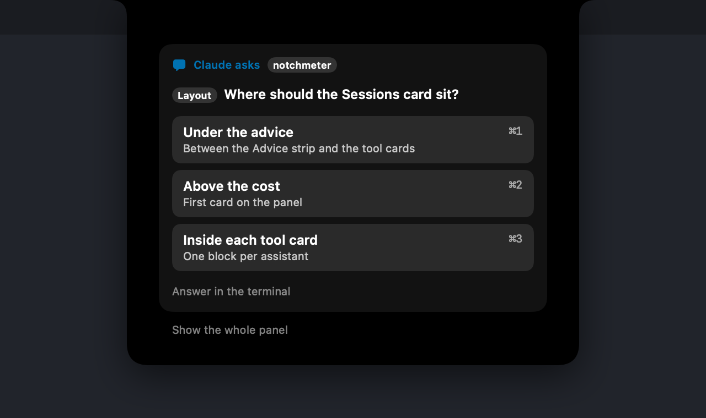

Know which assistant is waiting,
and whether you can afford the next task.
Every figure sourced, dated and tested — here is the document: docs/accuracy.md.
Usage meters for Claude Code, Codex, Cursor, Gemini CLI, Antigravity, Copilot, Kimi Code and OpenCode, and the sessions they are running, living in the MacBook notch or on any screen edge you prefer. Your menu bar ran out of room three apps ago. This one doesn't take any.
Answer Claude Code from the notch: approve or deny a permission request, pick the answer to a question, and jump back to the terminal it came from. Each part has its own switch in Settings; docs/hooks.md says what the hook sends and how it fails open.
macOS 15 or later · Apple silicon or Intel · no account, ever

Claude Code, Codex, Cursor, Gemini CLI, Antigravity, Copilot, Kimi Code and OpenCode, on one strip.
No account, no token stored, nothing sent to a server of ours.
Measured under a heavy job. Nothing at all while the screen is locked.
MIT licensed. Build it yourself if you'd rather.
Every other meter tells you how much
Notchmeter also tells you what to do about it. The rules are pure functions, run over every visible tool's live reading, and each one is worded as an instruction rather than a percentage.
The whole picture, on hover
Every meter shows a pace tick — where an even burn would be right now — a projection (“~67% left at reset”, or “Runs out in 2h”), and the reset time as a countdown or an exact time.
The Cost card adds what your local Claude Code sessions would have cost at API list prices: today, yesterday and the last 30 days, with a 30-day trend, split by model and by project.


A dashboard, so you are not guessing
Press ⌘U for the week in one window: what you spent each day and on which assistant, the peak day, and every limit with how much a day lasts until it resets.
Switch to 30 or 90 days to see the trend, and where the money went by model and by project. It reads only this Mac account's own figures and sends nothing anywhere.
Read from the tool that owns the account
Each reading is borrowed from the assistant itself, on the login that assistant already keeps on your Mac. Switch accounts in the tool and the notch follows.
Claude Code
The 5-hour session window, the weekly window, and the per-model weekly limits Anthropic publishes — plus what your local sessions would have cost at API list prices.
Codex
The session, weekly or monthly rate-limit windows from the same backend Codex itself asks, with the snapshots Codex writes into session rollouts as a fallback when offline.
Cursor
Included plan usage and on-demand spend for the current billing cycle, read the way cursor.com's own dashboard reads it, plus the Grok Bot weekly allowance where a seat has one. On a seat billed on-demand, the dashboard's own cycle figures fill the ring; with none, today's spend against your usual day.
Gemini CLI
The per-model quota Google meters for Gemini CLI — Gemini Pro, Flash, Flash Lite, and any Claude or GPT model the plan covers — from the same Code Assist endpoints Gemini CLI's /stats reads, asked as Gemini CLI.
Antigravity
The session and weekly quota Antigravity's own panel shows for its model groups, asked as Antigravity, so it can differ from Gemini CLI's on the same Google account.
GitHub Copilot
The AI-credit allowance for the month on a seat GitHub bills by usage (the premium-request allowance on a legacy one), and the chat and completion quotas when a plan meters them, from the endpoint Copilot's own editor plugin asks; the credits used, a cent each, join the Cost card.
Kimi Code
The rolling five-hour window, the week and the monthly pools, from the endpoint Kimi Code's own /usage command reads. Where Kimi's two kinds of figure disagree about a window, the window is as spent as the furthest-along one says.
OpenCode
The OpenCode Go meter, computed on this Mac from OpenCode's own database at the Go page's published rates and limits, its spend on the Cost card and its sessions, with no request to anyone.
Your own sessions
With the optional hook, the notch refreshes the moment a turn ends and counts the sessions you have running: Claude Code, Codex, Cursor, Gemini CLI, GitHub Copilot CLI and Kimi Code each have one, and OpenCode has a plugin. Claude Code, Codex, Gemini CLI, Copilot and OpenCode also say when they stop to ask you something, and which project is waiting; Cursor and Kimi Code have no event for a wait, so their rings never claim one.

It says when an assistant wants you
When Claude Code stops for a permission prompt or a question, the rings take the blue that means needs you, not running out, and a white dot says which readout it is — with a count when more than one session is waiting. A turn ending gets the same blue and a tick, for ninety seconds, on every ring with a hook. Claude Code, Codex, Gemini CLI, Copilot and OpenCode report a wait, because each documents an event that means the agent is asking you. Cursor's cannot show one: Cursor has no hook event for a wait, so its ring shows the tick and never the dot, rather than guessing.
Colour is never the only carrier. The dot and the tick stay if you turn the colour off, the cap on a ring's end keeps saying a window is nearly gone, and every readout has a VoiceOver label.
And you answer it there
When Claude Code stops for a permission, the panel opens on that request and nothing else: what the tool wants to do, an excerpt of it, and Deny or Allow under your thumb. When it asks a multiple-choice question, you pick the answer the same way. Then the panel closes again and the turn carries on, without a window ever taking your place in the terminal.
Codex and GitHub Copilot CLI answer permission requests the same way. Every part of it fails open: hand it back with Answer in the terminal or Escape, let the hold run out, switch it off in Settings, or quit Notchmeter altogether, and the terminal asks exactly as it always has. The card shows what a tool wants to do, never your prompt or the file it is editing.


Notch, or any edge you like
No notch, or you'd rather it lived elsewhere? The left and right edges cut the same notch shape into the side of the screen and open the panel beside it, with the readings still on the glass. There's a bar above the Dock too, and a pill under the menu bar on a notchless Mac.
Beside the notch, the strip fits itself to the room the menu bar actually leaves: it moves aside as the frontmost app's menus grow, and only once both ends have closed in does it drop to plain rings.
Go full screen and it gets out of the way. Not for everything, though: name the apps you want the meters beside, a call or a screen share, and they stay. One shortcut flips it for whatever is full screen right now, which is what you need when a film and a meeting are the same browser window.

The privacy model is the product
Notchmeter never signs in anywhere and never stores a token. It reads the login the vendor's own tool already put on this Mac, makes the one status read that tool itself makes, and passes it on to nobody.
- One status read per tool, on that tool's own saved login
- Reads your local Claude Code transcripts for the cost figures
- Keeps everything on the Mac it runs on
- Asks for Accessibility only if you set Readouts to Auto
- No account, no sign-in, no cloud, no analytics
- Never stores or forwards a token
- Never sends a prompt, a transcript or a project path anywhere
- Never probes an inference endpoint for rate-limit headers
Small enough to forget it's there
Measured on an M5 Pro running macOS 26 with a heavy Claude Code job in the background; the method and every raw number are in docs/energy.md.
of one core over 60 seconds with the panel closed; 0.0% between cost scans.
physical footprint, 77 MB at peak, with 3,868 transcripts on disk.
while the screen is locked, the displays are asleep, or the Mac is.
Questions, answered
Guides to the questions people ask at the moment they matter, each dated, stamped with the version it was tested on, and linked to the rule behind every figure.
Install it
macOS 15 Sequoia or later, Apple silicon or Intel. Signed, notarised, and it updates itself.
Notchmeter is a Mac app that lives in the notch. There is no Windows version. If you want one, say so on the Windows issue; subscribe to it and GitHub will tell you if that changes.
Free forever, MIT licensed. If it earns its place in your notch, support the project.
Notchmeter is a Mac app. There is no Windows or Linux version; if you want a Windows one, the Windows issue is where to say so.